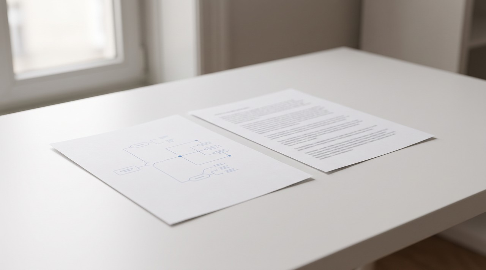

How to turn a Canvas Studio lecture into notes, when you only see a player
You will not see a download button on a Canvas Studio video in your course unless the person who uploaded it turned that option on, and that switch is off by default. The free way to get notes is the transcript, because Studio lets you save a text file if the video has captions. You should ask your lecturer to turn on the download option or send you the file if you want notes that show the slides right next to the words.
Your lecturer put a class recording inside a module or a page using Canvas Studio. The video plays in a small player with a comment box next to it, and your exam is coming up in two weeks. You start looking for a download button so you can make proper notes, but there is no button to be found.
Studio is just built that way. You can only download a Studio video if the person who uploaded it decided to allow downloads. I will explain where that switch is, how to grab the free transcript that most students ignore, and how to turn the video file into notes with the slides sitting next to the words.
Why is there no download button on my Canvas Studio video?
Canvas has a video tool called Canvas Studio built right into it. A lecturer uses Studio to record or upload a video and then puts it into the course, and they get a few settings when they do this. Florida State College at Jacksonville explains this in their Studio embed guide. They note that comments are turned on by default, and the download option is turned off by default but a lecturer can switch it on.
That same guide mentions that only the video owner can see the Display Download Option switch. This means a teaching assistant or a second lecturer might not be able to turn the download on even if they agree to do it. The setting is also attached to each single video, and this explains why you might see a download button on one week's lecture and nothing on the next week's video.
You should not use tricks to download a video when the option is turned off. Browser hacks and screen recording tools ignore a clear choice your lecturer made, and many universities view this as breaking the rules. Asking for the file is usually faster, and the steps below only use files you are allowed to keep.
| What you see | What it means | What to do |
|---|---|---|
| A download option on the video | The owner switched downloads on | Save the file and make notes from it |
| No download, but a transcript option at the top right | The video has captions | Save the transcript as a text file |
| No download and no transcript | No captions yet, downloads off | Ask the lecturer for captions or the file |
| A video inside a quiz | Studio hides the transcript there | Wait until the quiz is over and ask |
What is the free way to get notes from a Studio video?
The transcript gives you a free way to get notes. The company that makes Canvas is called Instructure, and they announced transcript download for students on their product blog. Students will see an option at the top right of the video to save the transcript as a text file as long as the video has captions. That same post points out they hide this option for videos inside quizzes so it does not turn into a quiz aid.
This entire transcript method relies on captions. The option will not show up if your lecturer forgot to add them. You can send a polite message to ask for captions, and this gives you the notes while helping every other student on the course who relies on captions to study.
- Open your course lecture and check the top right corner of the Studio video for the transcript button.
- Save that transcript to your computer as a text file and then open it in your notes app.
- Watch the video at a normal speed, and write down the minute mark next to the matching text line every time a new and important slide comes on screen.
- Rewrite the transcript into short notes in your own words under each of those time marks.
This method works well and costs you nothing. Its weak point is that a simple text transcript leaves out the slides. The slides usually carry half the meaning in a normal lecture. The lecturer might ask you to look at a graph, but your text file cannot show you what the graph looks like.
How do I get the slides beside the words?

You will need the actual video file to get the slides and the words together. The lecturer needs to turn the download option on or send the file directly to you. A short message explaining that you need the file for revision usually does the job. Many lecturers actually have no idea that the download button starts in the off position.
I built VideoDoc because I needed an AI to read my lecture videos, and a plain transcript always lost the diagrams. You open VideoDoc, click Use a local file, choose your video and press Make document. The tool gives you a PDF and a Markdown file that puts the words and their timestamps next to a picture of the exact slide from that moment. It also checks the screen so a slide that sits there for ten minutes only appears once in the document instead of forty times.
VideoDoc runs entirely on your own computer, so your class recording never uploads to a cloud server. You can take the Markdown file and give it to ChatGPT, Claude or NotebookLM and ask for a one page summary of each topic. The AI is able to read the words and see the slide pictures at the same time. VideoDoc also has an option to black out faces in the pictures and the document if you want to share your notes with a study group.
VideoDoc cannot open a Canvas Studio link, because course videos are locked behind your university login and the tool only reads public links or local files. It cannot help you grab a lecture you are not allowed to download, and that is how it should be. The free Studio transcript might be enough if your lecturer already shares the slides as a PDF. You should also know that turning an hour of speech into text takes a bit of time on a normal laptop without a graphics card.
Try it on the last lecture you were allowed to download.
Free to try on your own computer. Pro is $19 once, for two machines.
Some universities use a different video system. I wrote this exact kind of guide for Kaltura lectures and also for Panopto lectures.
Quick questions
Can students download Canvas Studio videos?
You can only download a video if the person who uploaded it turned on the download option when they put it in the course. That setting is off by default, and only the video owner has the power to change it. You should just ask your lecturer for the file if you do not see a download option.
How do I download a Canvas Studio transcript as a student?
Go to the video in your course and find the transcript option at the top right of the player. This lets you save the transcript to your computer as a text file. That option will only show up when the video actually has captions, and Studio hides this button on videos placed inside quizzes.
Why is there no transcript on my Canvas Studio video?
The video either has no captions right now or it is sitting inside a quiz. You can ask your lecturer to add captions. Doing this helps you and also helps every other student who needs them.
Is it allowed to screen record a Canvas Studio lecture?
The video owner made a clear choice if the download option is off. You can break your university's rules by recording your screen to get around that choice. Asking for the file is the better route.
Go to the lecture you understand the least tonight, and save the transcript if the video has one. Send your lecturer a quick message asking for the video file if you need to see the slides.

I am a telecom engineer and business analyst from Pakistan, and I build small honest desktop tools under Designesh. I made VideoDoc because I wanted my AI to read the lectures I study from. Everything here is tested on my own machine first.